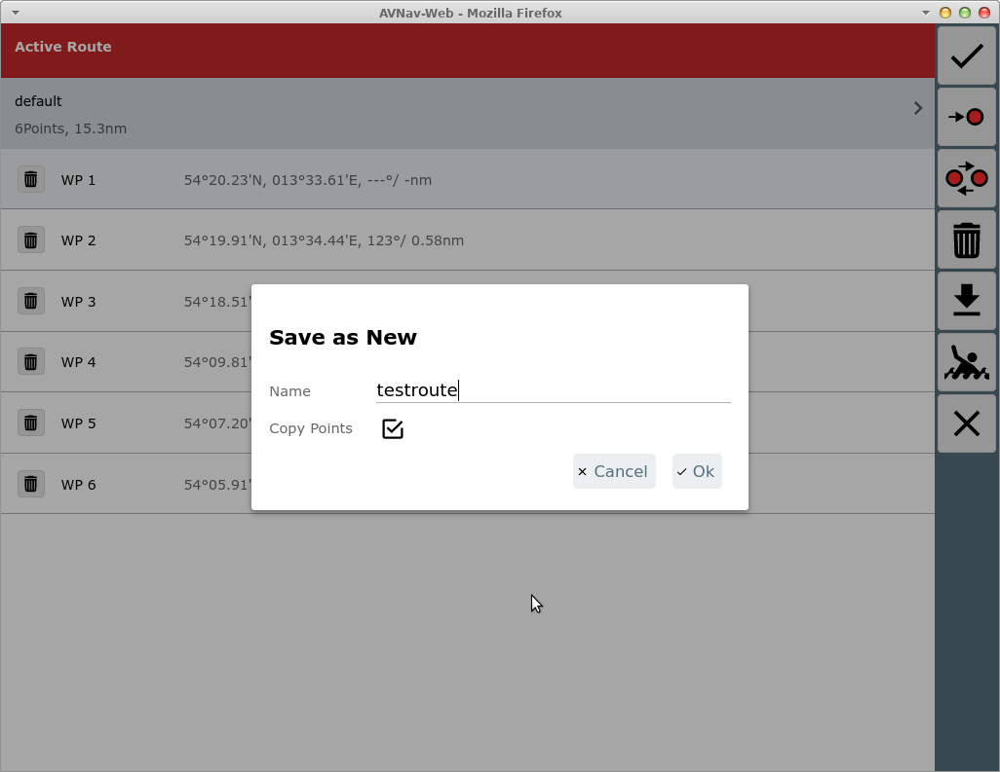
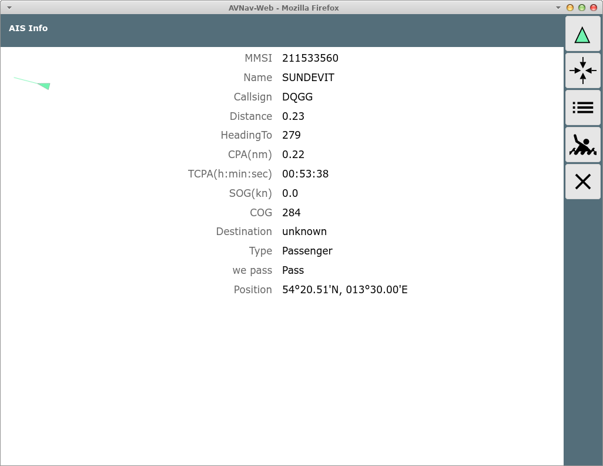
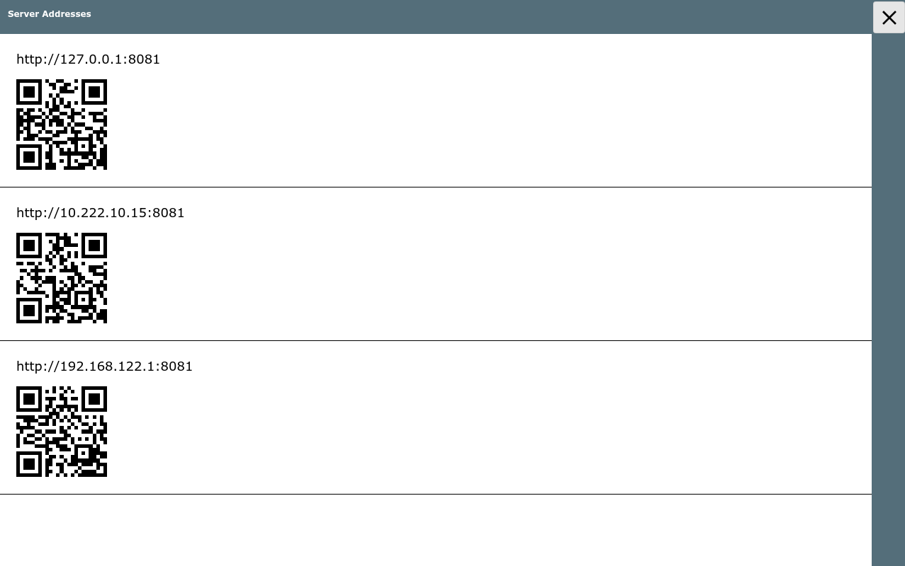
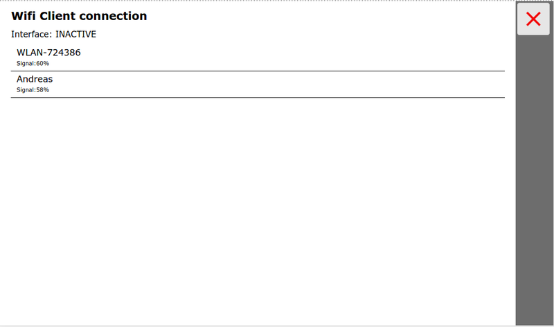
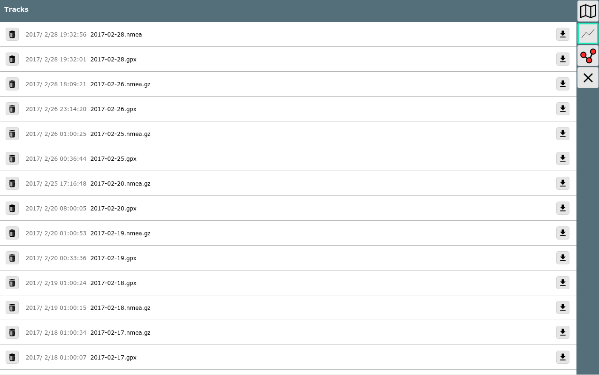

Die WebApp kann man im Normalfall über den Link http://avnav.avnav.de oder http://avnav.local erreichen, wenn man sich im WLAN des raspberry befindet.
Unter Android ist der Aufruf direkt in der App integriert.
Die WebApp gliedert sich in eine Reihe von Seiten die man entweder direkt von der Hauptseite - oder teilweise auch über bestimmte Zwischenseiten erreicht.
Über die Links in der 2. Spalte der Tabelle sind die Beschreibungen der einzelnen Seiten erreichbar.
| Icon | Seite | Erreichbar | Funktion |
| Hauptseite | Direkt nach dem Start | Anzeige der Liste der Karten, NMEA Status, Verzweigung zu weiteren Seiten | |
| Navigationsseite | Klick auf eine Karte auf der Hauptseite | Basis-Navigationsfunktion, Karten und Instrumenten-Anzeige, Wegepunkte, Routen... | |
| Status Seite | Button auf der Hauptseite | Status-Anzeige für den Server, Weiterverzweigung zur Wifi Konfiguration, zur Anzeige der Server-Adressen, zum Herunterfahren und zur Lizenz-Info | |
| Einstellungen | Button auf der Hauptseite | Einstellungen für die Anzeige im Browser, von dort weiter zum Layout-Editor, zur User Apps Konfiguration und zu Android Settings (nur Android) | |
| Files/Download | Button auf der Hauptseite | Anzeige, Download, Upload, Bearbeiten von Karten, Tracks, Routen, Nutzerdateien, Bildern, Layouts | |
| Dashboard | Button auf der Hauptseite, Klick auf bestimmte Anzeigen auf der Navigationsseite | Anzeige von Instrumentendaten (bis zu 5 Unterseiten) | |
| Route Editor | Button auf der Navigationsseite | Erstellen und Bearbeiten von Routen | |
| User Apps | Button auf der Hauptseite (nur sichtbar wenn user apps konfiguriert) | Anzeige von internen oder externen HTML-Seiten (z.B. signalK Web Interface wenn konfiguriert) | |
| Route Liste | Klick auf die Anzeige der aktuellen Route im Routen-Editor | Anzeige alelr Wegepunkte einer Route, Kopierfunktion, Bearbeitung, Auswahl gespeicherter Routen | |
| Wifi Konfiguration | Button auf der Statusseite ( |
Verbinden zu einem externen WLAN (nur wenn konfiguriert und WLAN Stick gesteckt ist, nicht Android) | |
| Anzeige der Serveradressen | Button auf der Statusseite ( |
Anzeige der aktuellen Serveradressen mit QR-Code zum einfachen Scannen mit einem anderen Gerät | |
| Layout Editor | Button auf der Einstellungsseite ( |
Bearbeiten der Anzeigen auf der Navigationsseite und auf den Dashboard Seiten | |
| User App Konfiguration | Button auf der Einstellungsseite ( |
Definieren von externen oder internen HTML Seiten, die als User Apps angezeigt werden sollen | |
| Ais Info |
Klick auf die AIS Anzeige auf der Navigationsseite oder ein AIS Ziel auf der Karte | Anzeige der Informationen zu einem AIS Ziel. Von dort weiter zur AIS Liste. | |
| Ais Liste | Über die Ais Info Seite, Button | Anzeige der Liste der AIS Ziele in der Umgebung, sortierbar |
Nach dem Aufruf der Start-Url landet man auf der
| Icon | Name | Beschreibung |
| ShowStatus |
Status-Seite für den Server |
|
| ShowSettings |
Einstellungen |
|
| ShowDownload |
Files/Downloads zum Herunterladen und Hochladen von Tracks, Routen, Karten, Layouts, User Files und Images |
|
| Connected | Wenn aktiv wird die Navigation (Wegepunkte, Routen) auch auf dem Server aktiviert, sonst nur lokal | |
| ShowGps |
Anzeige des Dashboards |
|
| Night |
Nachtmodus aktivieren |
|
| MOB | Mann über Bord (nur sichtbar wenn connected) | |
| MainAddOns | Anzeige von konfigurierten user apps (z.B. signalK) |
Im Hauptbereich der Seite befindet sich die Liste der vom Server gefundenen Kartensätze (beim Raspi-Server gemf files unter /data/avnav/charts, in der Android App unter charts im gewählten Verzeichnis).
Nach der ersten Installation sind hier einige Online Demo Karten sichtbar. Diese können nur mit Internet-Verbindung genutzt werden.
Weitere Karten kann man über die Files/Download Seite hochladen bzw. direkt in das entsprechende Verzeichnis kopieren (raspberry) bzw. aus einem externen Verzeichnis lesen (Android).
AvNav kann Karten im gemf Format lesen (bevorzugt), ab Version 202003xx auch im mbtiles Format. Ausserdem kann auch eine Online-Karten-Quelle über ein XML File eingebunden werden. Details dazu unter Kartenformate.
Durch Anklicken gelang man zur Navigationsseite mit dem enstprechenden Kartensatz.
Wie auf allen Seiten befindet sich am rechten Rand eine Button-Leiste.
Dieses Bild zeigt einen gesetzten Marker (locked) – das Boot ist auf Kurs.

| con | Name | Funktion |
| ZoomIn | Hereinzoomen | |
| ZoomOut |
Herauszoomen |
|
| LockPos |
Kartenmittelpunkt auf Bootsposition setzen und dort halten (Karte
bewegt sich mit dem Boot). Nur aktivierbar bei gültiger Position. |
|
| StopNav |
Navigation beenden. Nur sichtbar, wenn momentan ein Wegepunkt oder eine Route aktiv ist. |
|
| LockMarker |
Navigation starten. Der aktuelle Kartenmittelpunkt (Kreuz) wird zum Ziel-Wegepunkt. Nur sichtbar, wenn momentan keine Navigation aktiv ist. |
|
| CourseUp |
Karte drehen, so das die Kurs-Voraus Richtung oben ist. |
|
| ShowRoutePanel |
Wechsel zum Routen-Editor |
|
| MOB |
Mann über Bord |
|
| Cancel | Zurück zur Hauptseite |
Dies ist die Navigationsansicht. In der Mitte befindet sich die Kartenansicht mit der Schiffsposition (roter Pfeil). Die gelben und grünen Dreiecke mit Pfeilspitzen sind empfangene AIS Ziele in der Nähe (10nm) mit ihrem aktuellen Kurs sowie Name oder MMSI. Die organgefarbene Linie zeigt zum aktiven Wegepunkt. Die gepunktete Linie zeigt den Kurs vom Start der Navigation zum Wegepunkt (Sollkurs). Die Karte kann mit den normalen Gesten verschoben oder gezoomt werden, zum zoomen können auch die Buttons +/- auf der rechten Leiste benutzt werden.Wenn (wie im Bild) der Schiff-Button einen grünen Rand hat ("Schiff lock"), ist die Karten-Mitte auf die Schiffsposition fixiert und springt immer wieder dahin zurück.
Um das Schiff kann man bis zu 3 Kreise in entsprechenden Entfernungen einstellen um Abstände zu schätzen (Über settings->Navigation Display, Standard 300m und 1000m).
Links befinden sich (von oben nach unten):
Die Darstellung des nächsten AIS Zieles (geringste momentane Entfernung) färbt sich rot, wenn eine CPA von 500m unterschritten wird. Gelb bedeuted, dass nicht das nächste Ziel sondern ein separat ausgewähltes Ziel (siehe unten AIS) angezeigt wird. Ein Klick auf diese Fläche oder ein AIS Ziel auf der Karte führt auf die AIS Info Seite .
Im unteren Bereich der Navigationsseite befindet sich die Anzeige der wichtigsten Navigationsdaten ("Widgets"). Links die Daten des aktuellen Wegepunktes (Marker):
Danach folgen die Schiffsdaten:
Je nach Breite des Bildschirms und den Einstellungen für die Schriftgröße der "Widgets" werden bis zu 2 Reihen an Daten angezeigt (unter Settings einstellbar). Daten, die nicht mehr auf den Bildschirm passen, werden unterdrückt.
Für die Schiffsposition, Kurs und Geschwindigkeit kann eine Mittelwertbildung eingestellt werden (Settings->Navigation). Wenn diese eingestellt ist, sind die Bezeichner rot.
Die Anzeigen auf der Seite können über den Layout Editor angepasst werden.
Ein Klick auf die rechte Seite unteren Anzeigen führt zum Dashboard.
Ein Klick auf die linke Seite (Wegepunkt) zeigt einige zusätzliche Wegepunkt-Buttons.

| Icon | Name | Funktion |
| AnchorWatch | Einschalten der Ankerwache (s.u.) | |
| WpLocate | Zentrieren des Mittelpunktes auf den Wegepunkt | |
| WpEdit | Bearbeiten des Wegepunktes. Im angezeigten Dialog kann der Name und die Position des Wegepunktes editiert werden |
|
| WpGoto | Start der Navigation zu diesem Wegepunkt. Wir nur angezeigt, wenn noch keine Navigation aktiv ist. |
Falls momentan eine Route aktiv ist, werden etwas andere Buttons beim Klick auf die Wegepunkt-Daten angezeigt.

Die zusätzlichen Buttons haben folgende Funktionen
| Icon | Name | Funktion |
| NavNext | Navigiere zum nächsten Wegepunkt der Route | |
| WpNext | Zentriere den Kartenmittelpunkt auf den nächsten Wegepunkt | |
| WpPrevious | Zentriere den Kartenmittelpunkt auf den vorigen Wegepunkt |
Wenn eine Route aktiv ist, hat man wie im Bild links eine Anzeige der Daten für die aktuelle Route (Name,verbleibende Distanz, Ankunftszeit).
In diesem Modus erfolgt eine automatische Weiterschaltung zum nächsten Wegepunkt, wenn die folgenden Bedingungen erfüllt sind:
Die Anzeige der Routen-Parameter wird rot und zeigt den Kurs zum nächsten WP an, wenn das Boot im "Fangbereich" ist. Ausserdem erfolgt eine Alarmierung mit einem akustischen Signal und einer Anzeige.
Falls keine automatische Weiterschaltung erfolgt (z.B. weil man nicht dicht genug am WP ist), kann man auf den Wegepunkt klicken und mit den dann sichtbaren Wegepunkt Buttons weiterschalten.Danach ggf. Boot wieder locken.

Schritte:
Wenn man einen Wegepunkt aktiv hat (Marker Button grün) und die Karte nicht auf das Schiff "gelockt" ist (Schiffsbutton nicht grün), wird beim Bewegen der Karte ein Kreuz im Zentrum gezeigt und links erscheint eine Anzeig des aktuellen Abstandes vom Marker bzw. Schiff zum Kartenmittelpunkt. Damit kann man einfache Peilungen machen - Mittelpunkt auf Peilziel verschieben und Peilung ablesen.
Für das Starten einer Route wechselt man zunächst mittels  zum Routen Editor.
zum Routen Editor.
Buttons
| Icon | Name | Funktion |
| ZoomIn | Hereinzoomen |
|
| ZoomOut | Hinauszoomen |
|
| NavAdd | Einen neuen Punkt zur Route hinzufügen. Der Kartenmittelpunkt (Kreuz) wir als neuer Punkt hinter dem momentan rot markierten Punkt der Route hinzugefügt. |
|
| NavDelete | Löschen des momentan rot markierten Punktes der Route |
|
| NavToCenter | Verschieben des momentan rot markierten Punktes der Route auf den
Kartenmittelpunkt |
|
| NavGoto | Starte die Navigation zum momentan rot markierten Punkt der Route |
|
| MOB | Mann über Bord | |
| Cancel | Zurück zur Navigationsseite |
Auf der Routing Seite kann man eine Route bearbeiten bzw. editieren.
Zu jeder Zeit gibt es einen aktiven Wegepunkt (rot dargestellt, links in der Anzeige grau unterlegt. Die meisten Aktionen bezihen sich auf diesen Wegepunkt. Er kann durch Anklicken links oder durch anklicken auf der Karte geändert werden.
Wenn man die momentan aktive Route bearbeitet, wird das durch einen roten Rahmen links um die Routen-Info angezeigt. Falls eine andere Route bearbeitet wird, ist dieser grün.
Wenn man den Editor verlässt, geht die Anzeige zur aktiven Route zurück.Auf der linken Seite werden die Wegepunkte der aktuellen Route angezeigt. Dazu jeweils die Kurse und Distanzen für die Abschnitte. Im oberen Teil die Gesamtlänge der Route sowie die Gesamtstrecke sowie die ETA. Durch Anklicken kann man einen Wegepunkt aktivieren.
Durch nochmaligen Klick auf einen links bereits markierten Punkt wird eine Eingabemaske aufgerufen, in der man den Wegepunkt bearbeiten kann.
Ein Klick auf das Route Info Feld (links oben) führt zur Routen-Seite. Hier kann man den Namen der Route ändern oder alle Wegepunkte löschen.

| Icon | Name | Funktion |
| RoutePageOk | Änderungen übernehmen und zum Route Editor zurückkehren. | |
| NavGoto | Navigation zum ausgewählten Wegepunkt starten Der ausgewählte Punkt ist grau hinterlegt |
|
| NavInvert | Reihenfolge der Punkte in der Route umkehren | |
| NavDeleteAll | Alle Punkte aus der Route löschen | |
| RoutePageDownload | Wechsel zur Files/Download Seite, Unterseite Routen. Es kann eine Route aus der Liste ausgewählt werden, routen können heruntergeladen oder hochgeladen werden. Nach Auswahl einer Route Rückkehr zu dieser Seite mit der gewählten Route. |
|
| MOB | Mann über Bord | |
| Cancel | Bearbeitung abbrechen, zurück zum Route Editor |
Hier kann man alle Punkte bearbeiten (Klick) oder die Route unter einem neuen Namen speichern (Kopie). Dazu klickt man auf den Namen der Route und erhält einen Dialog.

Danach über den OK Button zurück zum Routen Editor um die Route weiter zu bearbeiten.
Von der Navigationsseite oder von einer Dashboard-Seite kommt man durch Klick auf die AIS-Anzeige oder auf ein AIS-Ziel in der Karte auf diese Info-Seite.
Die Details zum Ziel werden angezeigt.
Buttons
| Icon | Name | Funktion |
| AisNearest |
Zentriere auf das nächste Ziel und mache dieses wieder zum
angezeigten Ziel auf der Navigationsseite |
|
| AisInfoLocate |
Zentriere die Karte auf dieses Ziel und zeige dessen Daten auf der
Navigationsseite |
|
| AisInfoList |
Anzeige der Liste aller AIS Ziele |
|
| MOB |
Mann über Bord |
|
| Cancel |
Zurück zur vorigen Seite |
Mit einem Klick auf die AIS Info (oder auf ein AIS Target in der Karte) gelangt man zur AIS Übersicht:

Auf dieser Seite sieht man alle empfangenen AIS Ziele im Umkreis von ca.
10nm zur Bootsposition (sortiert nach CPA). Mit Klick auf eine Zeile
springt man zurück zur Karten-Anzeige mit dem gewählten AIS Ziel im
Zentrum. Das gewählte Ziel erscheint auch im AIS Info Fenster (dieses
färbt sich gelb). Ein Klick auf den grünen Pfeil schaltet wieder in den
„Normalmodus“ - d.h. Anzeige des nächsten AIS Zieles.
Mit dem zurück Button geht es unverändert zur Karten-Anzeige zurück.
Über den Button (000) auf der Start-Seite oder einen Klick auf die Position (rechts unten) auf der Navi-Seite gelangt man zu einer Anzeige der GPS-Daten ohne Karte.
Im Layout können bis zu 5 solcher Seiten mit verschiedenen Anzeigen konfiguriert werden.


Wichtig ist hier insbesondere der Status der „Serial reader“ - dieser zeigt, ob sie NMEA Daten empfangen.
Unter Android kann man von hier aus auch die Android Einstellungen erreichen.
Mit dem QR-Code Button kommt man zu einer Seite, auf der die Adressen des Web-Servers angezeigt werden.
Über den WLAN-Button gelangt man zur WLAN Seite (nicht auf Android).

Von der Startseite kommt man mit dem Download Button zur Download-/Upload Seite. Auf dieser Seite kann man Tracks, Routen und Karten herunterladen oder auf den Raspberry hochladen und sie dort auch löschen.
Hochladen/Löschen funktioneren nur im connected Mode.
Um im Dunkeln nicht zu blenden, kann man auf einen Nachtmodus umstellen
(button  auf
der Startseite).
auf
der Startseite).

Diese Software: MIT Licence
Copyright (c) 2013-2017 Andreas Vogel http://www.wellenvogel.de
Permission is hereby granted, free of charge, to any person obtaining
a copy
of this software and associated documentation files (the "Software"),
to deal
in the Software without restriction, including without limitation the
rights
to use, copy, modify, merge, publish, distribute, sublicense, and/or
sell
copies of the Software, and to permit persons to whom the Software is
furnished to do so, subject to the following conditions:
The above copyright notice and this permission notice shall be
included in
all copies or substantial portions of the Software.
THE SOFTWARE IS PROVIDED "AS IS", WITHOUT WARRANTY OF ANY KIND,
EXPRESS OR
IMPLIED, INCLUDING BUT NOT LIMITED TO THE WARRANTIES OF
MERCHANTABILITY,
FITNESS FOR A PARTICULAR PURPOSE AND NONINFRINGEMENT. IN NO EVENT
SHALL THE
AUTHORS OR COPYRIGHT HOLDERS BE LIABLE FOR ANY CLAIM, DAMAGES OR OTHER
LIABILITY, WHETHER IN AN ACTION OF CONTRACT, TORT OR OTHERWISE,
ARISING FROM,
OUT OF OR IN CONNECTION WITH THE SOFTWARE OR THE USE OR OTHER DEALINGS
IN
THE SOFTWARE.
Es werden eine ganze Reihe von OpenSource Libraries verwendet - diese
sind im Detail auf der Info Seite in der App aufgeführt.
Die WebApp besteht aus einem HTML Gerüst (avnav_viewer.html) sowie den eingebundenen JavaScript Bibliotheken und einem JavaScript Anteil (avnav_min.js). Die Darstellung ist weitgehend von der eigentlichen Funktion entkoppelt und wird per css (unter Nutzung von less) gesteuert. Als Framework wird ReactJs verwendet.
Die Kommunikation erfolgt durch einfache GET/POST requests zur url http://avnav/viewer/avnav_navi.php, dann folgen Parameter, die den request beschreiben. Die Antworten vom server sind json kodiert.
Die wichtigsten requests sind:
gps: Abfrage der Positionsdaten
ais: Abfrage der AIS Daten
track: Abfrage des aktuellen Tracks
Diese Requests werden periodisch wiederholt (polling).